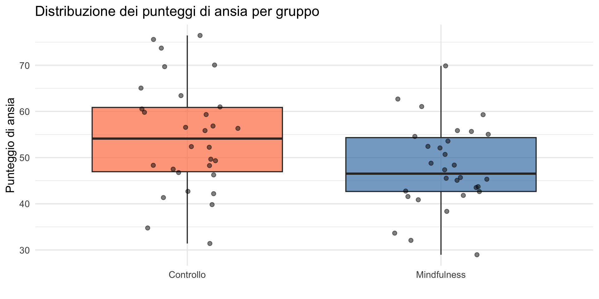
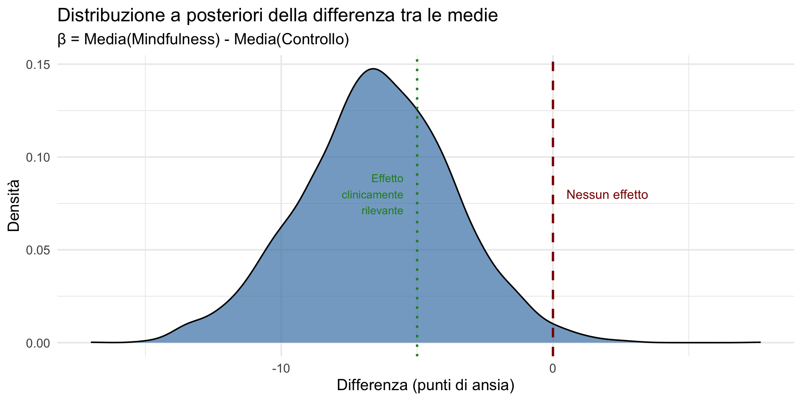
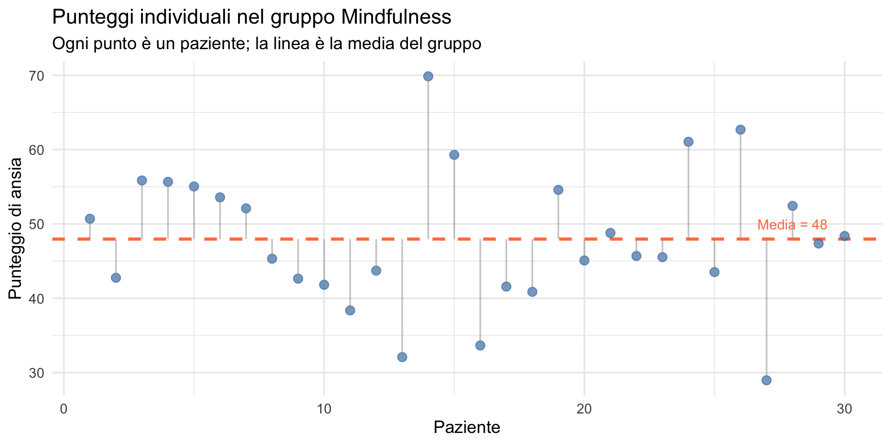
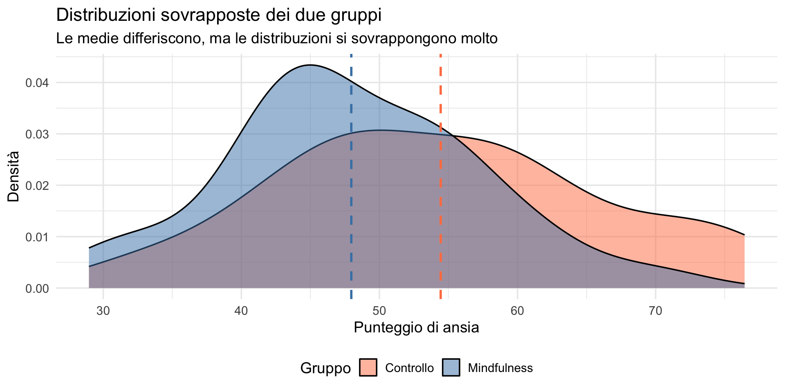

![]()
# Simuliamo i dati dello studio
set.seed(123)
# Gruppo controllo
n_controllo <- 30
ansia_controllo <- rnorm(n_controllo, mean = 55, sd = 12)
# Gruppo trattamento (mindfulness)
n_trattamento <- 30
ansia_trattamento <- rnorm(n_trattamento, mean = 46, sd = 11)
# Creiamo il dataframe
dati <- data.frame(
ansia = c(ansia_controllo, ansia_trattamento),
gruppo = factor(c(rep("Controllo", n_controllo),
rep("Mindfulness", n_trattamento)))
)Confronto tra due gruppi
Inferenza bayesiana sulla differenza tra medie — Segmento 1
29 ottobre 2026
Da una media a due medie
Nella Lezione 25 abbiamo stimato una singola media con il modello y ~ 1 e abbiamo distinto tra inferenza sul gruppo e previsione sull’individuo.
Oggi estendiamo il ragionamento al caso più comune in psicologia: confrontare due gruppi. Vedremo che il confronto tra medie è un caso speciale della regressione (Lezione 24) e che la distinzione nomotetico/idiografico resta centrale.
Obiettivi
- Comprendere il problema del confronto tra due gruppi.
- Rivedere l’approccio frequentista (test \(t\) di Student).
- Formulare il problema come modello di regressione.
- Introdurre l’approccio bayesiano al confronto tra medie.
- Comprendere i limiti del test \(t\) per le decisioni individuali.
Parte 1: il problema
La domanda di ricerca
Una delle domande più comuni in psicologia:
“La media del gruppo A è diversa dalla media del gruppo B?”.
Esempi:
- I pazienti trattati con CBT migliorano più di quelli in lista d’attesa?
- I tempi di reazione sono diversi tra condizione congruente e incongruente?
- L’ansia è più alta nei genitori rispetto ai non genitori?
Un esempio concreto
Uno studio sull’efficacia di un intervento di mindfulness per la riduzione dell’ansia.
Disegno: due gruppi indipendenti.
- Gruppo trattamento: 8 settimane di mindfulness.
- Gruppo controllo: lista d’attesa.
Variabile dipendente: punteggio di ansia (scala 0-100).
I dati
ansia gruppo
1 48.27429 Controllo
2 52.23787 Controllo
3 73.70450 Controllo
4 55.84610 Controllo
5 56.55145 Controllo
6 75.58078 ControlloVisualizziamo i dati

Parte 2: l’approccio frequentista
Il test t per campioni indipendenti
L’approccio classico — quello discusso nelle Lezioni 14–16 — utilizza il test \(t\) di Student per gruppi indipendenti:
\[ t = \frac{\bar{x}_1 - \bar{x}_2}{\text{SE}_{\bar{x}_1 - \bar{x}_2}}, \] dove l’errore standard della differenza dipende dalle varianze e dalle numerosità dei due gruppi.
Calcolo dell’errore standard (SE)
L’errore standard della differenza tra le medie, \(SE_{\bar{x}_1 - \bar{x}_2}\), misura l’incertezza nella stima.
Formula generale
La formula più comune, utilizzata quando si assume omoschedasticità (varianze dei gruppi uguali, \(\sigma_1^2 = \sigma_2^2\)), è:
\[ \text{SE}_{\bar{x}_1 - \bar{x}_2} = s_p \sqrt{\frac{1}{n_1} + \frac{1}{n_2}}, \] dove:
- \(n_1\) e \(n_2\) sono le numerosità campionarie dei due gruppi.
La deviazione standard pooled
- \(s_p\) è la deviazione standard pooled (combinata), che stima la varianza comune:
\[ s_p = \sqrt{\frac{(n_1 - 1)s_1^2 + (n_2 - 1)s_2^2}{n_1 + n_2 - 2}} \]
- \(s_1^2\) e \(s_2^2\) sono le varianze campionarie dei due gruppi.
Caso con eteroschedasticità
Quando non si può assumere che le varianze siano uguali (test \(t\) di Welch), la formula diventa:
\[ \text{SE}_{\bar{x}_1 - \bar{x}_2} = \sqrt{\frac{s_1^2}{n_1} + \frac{s_2^2}{n_2}}. \]
In questo caso, i gradi di libertà per il test vengono approssimati (formula di Satterthwaite).
Applichiamo il test t
Two Sample t-test
data: ansia by gruppo
t = 2.3743, df = 58, p-value = 0.02091
alternative hypothesis: true difference in means between group Controllo and group Mindfulness is not equal to 0
95 percent confidence interval:
1.015783 11.930284
sample estimates:
mean in group Controllo mean in group Mindfulness
54.43475 47.96172 Interpretazione frequentista
Con p = 0.0209, il ricercatore conclude:
“La differenza tra le medie è statisticamente significativa. Il gruppo mindfulness mostra livelli di ansia significativamente inferiori rispetto al gruppo di controllo.”
Ma cosa significa esattamente?
Il valore-\(p\) ci dice: “Se non ci fosse differenza nella popolazione, la probabilità di osservare una differenza così grande (o maggiore) nel campione sarebbe circa il 2.1%.”
I limiti dell’interpretazione frequentista
Come abbiamo discusso nelle Lezioni 15–16, il test \(t\) non risponde alle seguenti domande:
- Qual è la probabilità che il trattamento sia efficace?
- Di quanto migliora mediamente un paziente?
- Questo specifico paziente beneficerà del trattamento?
Il test \(t\) fornisce solo una decisione binaria: rifiuto/non rifiuto di \(H_0\).
Parte 3: il confronto come regressione
Un cambio di prospettiva: due medie = una regressione
Come nella Lezione 24, il confronto tra due medie può essere scritto come un modello lineare:
\[ y_i = \alpha + \beta \, x_i + \varepsilon_i, \] dove:
- \(y_i\) = punteggio di ansia del soggetto \(i\),
- \(x_i\) = 0 (controllo) oppure 1 (trattamento),
- \(\varepsilon_i\) = variabilità individuale (rumore).
Cosa succede quando \(x=0\)?
Se \(x_i = 0\) (controllo):
\[ y_i = \alpha + \beta\cdot 0 + \varepsilon_i = \alpha + \varepsilon_i. \]
Quindi:
- valore atteso: \[ \mathbb{E}[y \mid x=0] = \alpha. \]
- Interpretazione: \[ \alpha = \textbf{media del gruppo controllo}. \]
Cosa succede quando \(x=1\)?
Se \(x_i = 1\) (trattamento):
\[ y_i = \alpha + \beta\cdot 1 + \varepsilon_i = \alpha + \beta + \varepsilon_i. \]
Quindi:
- valore atteso: \[ \mathbb{E}[y \mid x=1] = \alpha + \beta. \]
- Interpretazione: \[ \alpha+\beta = \textbf{media del gruppo trattamento}. \]
Quindi \(\beta\) cos’è?
Sottraiamo le due medie attese:
\[ \mathbb{E}[y \mid x=1] - \mathbb{E}[y \mid x=0] = (\alpha+\beta) - \alpha = \beta. \]
Conclusione:
\(\beta\) = differenza tra la media del trattamento e la media del controllo.
Mini-riassunto
- Controllo (\(x=0\)): media \(=\alpha\);
- Trattamento (\(x=1\)): media \(=\alpha+\beta\);
- Differenza: \((\alpha+\beta)-\alpha=\beta\).
Perché la regressione?
Estimate Std. Error t value Pr(>|t|)
(Intercept) 54.434755 1.927774 28.237105 1.382135e-35
gruppo_num -6.473033 2.726284 -2.374306 2.091212e-02Interpretazione:
- Intercetta (
(Intercept)) (54.43) = media del gruppo controllo; - Coefficiente
gruppo_num(-6.47) = differenza tra le medie.
Verifica
# A tibble: 2 × 3
gruppo avg stdev
<fct> <dbl> <dbl>
1 Controllo 54.4 11.8
2 Mindfulness 48.0 9.19Il vantaggio della regressione
Formulare il confronto come regressione ci permette di:
- estendere facilmente il modello (covariate, interazioni);
- passare naturalmente all’approccio bayesiano;
- quantificare l’incertezza sulla differenza \(\beta\).
Parte 4: l’approccio bayesiano
Il modello bayesiano
Nel framework bayesiano — usando gli stessi ingredienti della Lezione 17 — specifichiamo:
Verosimiglianza: \[ y_i \sim \text{Normale}(\alpha + \beta \cdot x_i, \ \sigma). \]
Prior: \[ \begin{align} \alpha &\sim \text{Normale}(50, 20),\\ \beta &\sim \text{Normale}(0, 10),\\ \sigma &\sim \text{Half-Cauchy}(0, 10). \end{align} \]
Stimiamo il modello con brms
Risultati del modello bayesiano
Family: gaussian
Links: mu = identity
Formula: ansia ~ gruppo
Data: dati (Number of observations: 60)
Draws: 4 chains, each with iter = 2000; warmup = 1000; thin = 1;
total post-warmup draws = 4000
Regression Coefficients:
Estimate Est.Error l-95% CI u-95% CI Rhat Bulk_ESS Tail_ESS
Intercept 54.38 2.01 50.51 58.30 1.00 3763 2659
gruppoMindfulness -6.46 2.82 -12.17 -1.00 1.00 4086 2691
Further Distributional Parameters:
Estimate Est.Error l-95% CI u-95% CI Rhat Bulk_ESS Tail_ESS
sigma 10.72 1.01 8.94 12.90 1.00 3585 2969
Draws were sampled using sample(hmc). For each parameter, Bulk_ESS
and Tail_ESS are effective sample size measures, and Rhat is the potential
scale reduction factor on split chains (at convergence, Rhat = 1).Interpretazione dei risultati
Estraiamo i campioni a posteriori dei parametri:
Calcoliamo la differenza tra le medie a posteriori (β):
Calcoliamo l’intervallo di credibilità al 95% — con l’interpretazione diretta che abbiamo appreso nella Lezione 20:
2.5% 97.5%
-12.17 -1.00 Interpretazione:
- il gruppo mindfulness ha, in media, -6 punti in meno di ansia;
- siamo al 95% certi che la vera differenza sia tra -12 e -1 punti.
Probabilità dirette
L’approccio bayesiano permette di calcolare probabilità dirette per rispondere a domande clinicamente rilevanti.
- Qual è la probabilità che il trattamento riduca l’ansia?
P(β < 0) = 98.8 %La posterior della differenza

Parte 5: ma cosa succede all’individuo?
Il problema nomotetico/idiografico
Finora abbiamo risposto alla domanda:
“In media, il trattamento è efficace?”
Questa è una domanda nomotetica: riguarda un parametro della popolazione (\(\beta\)).
Ma la domanda clinicamente rilevante — come abbiamo visto nella Lezione 25 — è un’altra:
“Questo specifico paziente beneficerà del trattamento?”
Questa è una domanda idiografica: riguarda una realizzazione individuale.
Ricordiamo: \(\mu\) vs \(X\)
La stessa distinzione della Lezione 25:
| Ricerca (nomotetico) | Clinica (idiografico) |
|---|---|
| Media del gruppo (\(\mu\)) | Risposta individuale (\(X\)) |
| Differenza tra medie (\(\beta\)) | Beneficio del singolo paziente |
| “Il trattamento funziona?” | “Funzionerà per questo paziente?” |
Guardiamo i dati: un singolo paziente
Prendiamo un paziente specifico dal nostro campione:
Medie dei gruppi: Controllo: 54.4 Mindfulness: 48 Questo paziente ha un punteggio di ansia specifico, non “la media”.
Ogni paziente è diverso

La variabilità è la realtà clinica
Le statistiche descrittive evidenziano l’ampia variabilità nei punteggi di ansia osservati nel gruppo mindfulness:
Media: 48 SD: 9.2 Min: 29 Max: 69.9 Range: 40.9 Il range di 41 punti è molto ampio: alcuni pazienti hanno risposto bene al trattamento (punteggi bassi), mentre altri mostrano livelli di ansia ancora elevati.
Questa eterogeneità nella risposta al trattamento è la realtà clinica che qualsiasi analisi deve catturare e spiegare.
Quanti pazienti migliorano davvero?
Confronto basato su una soglia clinica
Utilizziamo una soglia di 50 punti per identificare i pazienti con ansia clinicamente elevata.
Risultati osservati
- Gruppo Controllo: 17 su 30 pazienti (57%) presentano ansia elevata.
- Gruppo Mindfulness: 12 su 30 pazienti (40%) presentano ansia elevata.
Interpretazione clinica
Questa analisi dicotomica (alto/basso) fornisce una prospettiva complementare alla differenza tra medie. Mostra quanti pazienti nella pratica clinica effettivamente beneficiano del trattamento, superando una soglia di rilevanza clinica.
Visualizziamo la sovrapposizione

Il messaggio dei dati grezzi
Guardando i dati così come sono, senza inferenza:
- le medie dei due gruppi differiscono di circa 6 punti;
- ma le distribuzioni si sovrappongono considerevolmente;
- alcuni pazienti nel gruppo mindfulness hanno ansia più alta di alcuni nel gruppo controllo;
- i dati individuali sono molto più rumorosi delle medie.
Il rumore individuale
Coefficiente di variazione (DS/Media × 100): Controllo: 21.6 % Mindfulness: 19.2 %Rapporto tra variabilità e differenza delle medie: Differenza medie: 6.5 punti DS pooled: 10.6 punti Rapporto DS/differenza: 1.6 La variabilità individuale è molto maggiore della differenza tra le medie.
Un’anticipazione: modelli multilivello
I dati individuali sono i più interessanti clinicamente, ma anche i più rumorosi.
Come gestire questo problema?
- Approccio nomotetico puro: ignoriamo la variabilità, guardiamo solo le medie.
- Approccio idiografico puro: ogni paziente è un caso a sé.
Esiste una via di mezzo: i modelli multilivello (o gerarchici), che permettono di stimare effetti individuali “regolarizzati” dalla struttura del gruppo. Verranno introdotti nella Lezione 29.
Il messaggio chiave
La media del gruppo descrive la tendenza centrale.
Ma i pazienti reali si distribuiscono attorno a quella media con ampia variabilità.
Un effetto medio può essere statisticamente chiaro e al tempo stesso clinicamente incerto per il singolo paziente.
Riepilogo
I punti chiave di questo segmento
Il confronto tra due medie può essere formulato come regressione lineare (Lezione 24).
L’approccio frequentista (test \(t\)) fornisce solo una decisione binaria.
L’approccio bayesiano quantifica l’incertezza sulla differenza delle medie.
Ma guardando i dati individuali osserviamo grande variabilità.
La differenza delle medie risponde alla domanda nomotetica; la clinica richiede risposte idiografiche (Lezione 25).
Il messaggio fondamentale
“La media del gruppo ci dice la tendenza centrale. Ma i pazienti reali si distribuiscono attorno a quella media con ampia variabilità. I dati individuali sono i più interessanti, ma anche i più rumorosi.”
Per il prossimo segmento
Nel prossimo segmento:
- spiegheremo cos’è la distribuzione predittiva a livello individuale;
- partiremo da previsioni per un singolo paziente;
- passeremo poi all’insieme dei pazienti;
- mostreremo i limiti dell’approccio frequentista per l’analisi idiografica;
- vedremo perché l’approccio bayesiano è naturalmente adatto a queste domande.